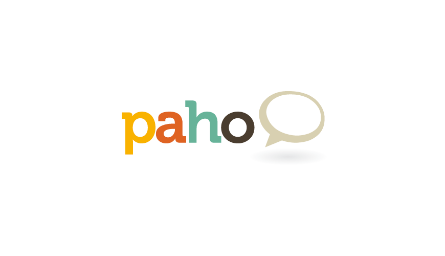
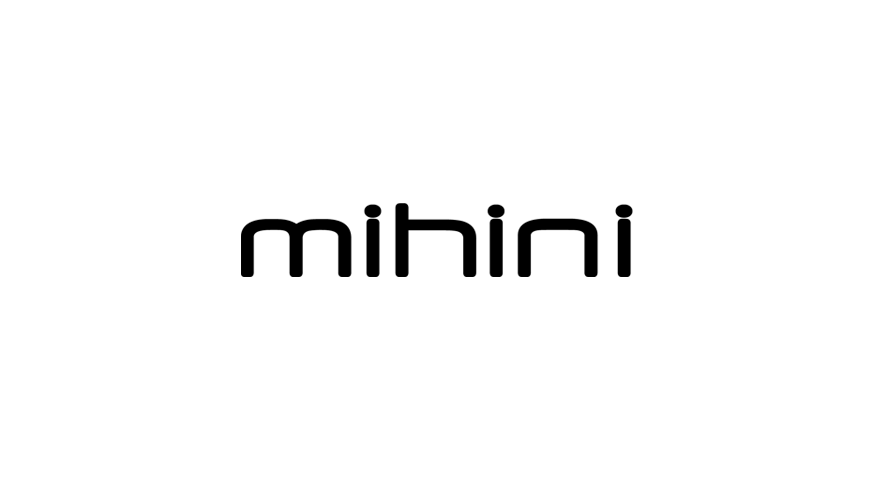

Koneki
Koneki delivers tools easing the development, simulation, testing/debugging and deployment of M2M solutions.

Paho
The Paho project provides scalable Open Source implementations of open and standard messaging protocols.

Mihini
Mihini will deliver an embedded runtime running on top of Linux, exposing high-level Lua API for building M2M applications.